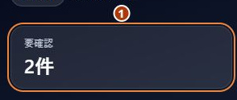
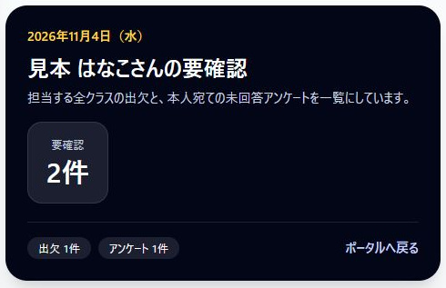
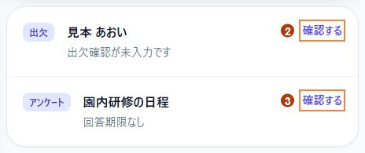
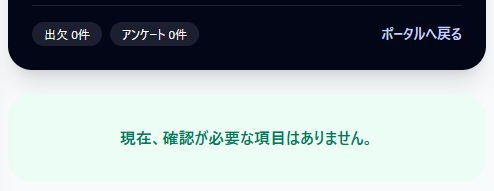
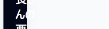

- 「要確認」を押します。ホームの上にある、件数が書かれたところを押してください。
ホームのどこにあるかを見る
確認が必要なお子さんの出欠と、自分がまだ答えていないアンケートを、ひとつの画面で見られます。


画面の上に、確認する件数が出ます。「出欠」と「アンケート」の件数を合わせた数です。
この見本では、担当クラスの出欠が1件、自分宛てのアンケートが1件あります。
ホームに戻るときは「ポータルへ戻る」を押します。


「現在、確認が必要な項目はありません。」と出たら、ここでの確認は終わりです。
「取得不可」は件数を読み込めなかったときの表示です。ページをもう一度読み込んでください。

「全クラス」を押すと、園全体で確認が必要な出欠を見られます。「担当」を押すと、自分のクラスの表示に戻ります。アンケートは、どちらでも自分宛てのものが出ます。